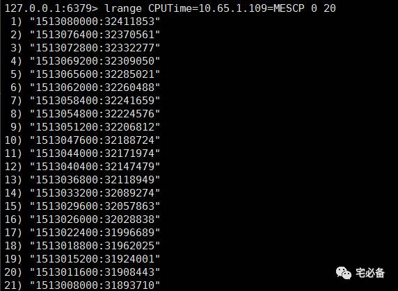
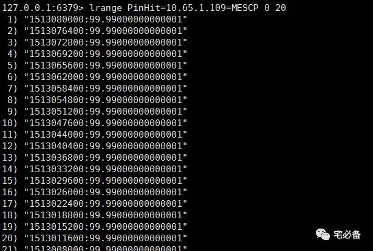
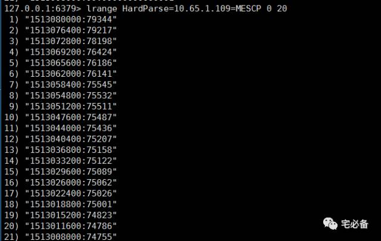

使用Django获取Oracle系统状态数据并存放在redis中
2017-12-12 Python 宅必备
开发环境
操作系统:CentOS 7.4
Python版本 :3.6
Django版本: 1.10.5
操作系统用户:oms
前面介绍了如何利用Python获取TOP SQL数据并在前端展现出来
对于Oracle数据库的运维，我们首先需要知道系统的整体运行状况，例如物理读，逻辑读，解析，命中率等
这节就讲如何将这些数据获取
获取原理
我们通过查询v$sysstat 等视图来获取信息
关于redis存储，我们选择的value的数据类型为列表
1. 新建MySQL表存放监控数据
我们无需事先建立redis的key值
2. 编写自定义命令获取指标并存入数据库
如何创建自定义命令请参考
http://www.zhaibibei.cn/oms/3.1/
2.1 主体程序
这里我们用oracle_hit_sysstat_redis.py程序来获取Oracle TOP SQL
vim monitor/management/commands/oracle_hit_sysstat_redis.py
#coding=utf-8
from django.core.management.base import BaseCommand
from monitor.models import oraclelist
from monitor.models import *
import os
import redis
import time
from monitor.command.getoracle_hit_sysstat import *
from monitor.command.sendmail_phone import *
class Command(BaseCommand):
def handle(self, *args, **options):
r=redis.StrictRedis()
#nowtime=str(time.time()).split('.')[0]
check_time=time.strftime('%Y%m%d %H', time.localtime())
if check_time.split()[1]=='00':
flag=1 #flag used to determin when should push two times
nowtime=str(time.mktime(time.strptime(check_time,'%Y%m%d %H'))).split('.')[0]
nnowtime=str(int(str(time.mktime(time.strptime(check_time,'%Y%m%d %H'))).split('.')[0])-1)
else:
flag=0
nowtime=str(time.mktime(time.strptime(check_time,'%Y%m%d %H'))).split('.')[0]
ip=oraclelist.objects.all().order_by('tnsname')
for i in ip:
if i.monitor_type==1 and i.hit_type==1:
ipaddress1=i.ipaddress
username=i.username
password=i.password
port=i.port
tnsname1=i.tnsname
try:
db = cx_Oracle.connect(username+'/'+password+'@'+ipaddress1+':'+port+'/'+tnsname1 ,mode=cx_Oracle.SYSDBA)
except Exception as e:
content= (i.ipaddress+' is Unreachable,The reason is '+str(e)).strip()
send_mail_phone(to_list,'Oracle Performance Monitor Exception Occured',content)
print( content)
# break
else:
cursor = db.cursor()
if i.version !='9i':
dbtime=getdbtime(cursor)
dbtimekey='DBTime='+ipaddress1+'='+tnsname1
dbtimevalue=nowtime+':'+str(dbtime)
r.lpush(dbtimekey,dbtimevalue)
if flag==1:
dbtimevalue1=nnowtime+':'+str(dbtime)
r.lpush(dbtimekey,dbtimevalue1)
getlibhit1=getlibhit(cursor)
getdichit1=getdichit(cursor)
getcachehit1=getcachehit(cursor)
#undousage=getundousage(cursor)
tempusage=gettemputilization(cursor)
loadprofile=getloadprofile(cursor)
cursor.close()
db.close()
cpu_time=loadprofile[0][1]
execute=loadprofile[1][1]
logons=loadprofile[2][1]
hard_parse=loadprofile[3][1]
total_parse=loadprofile[4][1]
physical_reads=loadprofile[5][1]
redo_size=loadprofile[6][1]
logical_reads=loadprofile[7][1]
sorts=loadprofile[8][1]
fetch_by_rowid=loadprofile[9][1]
fetch_continued_row=loadprofile[10][1]
scan_rows_gotten=loadprofile[11][1]
user_calls=loadprofile[12][1]
user_commits=loadprofile[13][1]
user_rollbacks=loadprofile[14][1]
pinhit=getlibhit1[2]
reloadhit=getlibhit1[4]
dichit=getdichit1[2]
cachehit=getcachehit1[0]
executekey='ExecuteCount='+ipaddress1+'='+tnsname1
executevalue=nowtime+':'+str(execute)
if flag==1:
executevalue1=nnowtime+':'+str(execute)
r.lpush(executekey,executevalue1)
r.lpush(executekey,executevalue)
logonskey='Logons='+ipaddress1+'='+tnsname1
logonsvalue=nowtime+':'+str(logons)
if flag==1:
logonsvalue1=nnowtime+':'+str(logons)
r.lpush(logonskey,logonsvalue1)
r.lpush(logonskey,logonsvalue)
redosizekey='RedoSize='+ipaddress1+'='+tnsname1
redosizevalue=nowtime+':'+str(redo_size)
if flag==1:
redosizevalue1=nnowtime+':'+str(redo_size)
r.lpush(redosizekey,redosizevalue1)
r.lpush(redosizekey,redosizevalue)
sortskey='SortsDisk='+ipaddress1+'='+tnsname1
sortsvalue=nowtime+':'+str(sorts)
if flag==1:
sortsvalue1=nnowtime+':'+str(sorts)
r.lpush(sortskey,sortsvalue1)
r.lpush(sortskey,sortsvalue)
cpukey='CPUTime='+ipaddress1+'='+tnsname1
cpuvalue=nowtime+':'+str(cpu_time)
if flag==1:
cpuvalue1=nnowtime+':'+str(cpu_time)
r.lpush(cpukey,cpuvalue1)
r.lpush(cpukey,cpuvalue)
fetchbyrowidkey='FetchByRowid='+ipaddress1+'='+tnsname1
fetchbyrowidvalue=nowtime+':'+str(fetch_by_rowid)
if flag==1:
fetchbyrowidvalue1=nnowtime+':'+str(fetch_by_rowid)
r.lpush(fetchbyrowidkey,fetchbyrowidvalue1)
r.lpush(fetchbyrowidkey,fetchbyrowidvalue)
fetchconrowkey='FetchContinuedRow='+ipaddress1+'='+tnsname1
fetchconrowvalue=nowtime+':'+str(fetch_continued_row)
if flag==1:
fetchconrowvalue1=nnowtime+':'+str(fetch_continued_row)
r.lpush(fetchconrowkey,fetchconrowvalue1)
r.lpush(fetchconrowkey,fetchconrowvalue)
rowsgottenkey='ScanRowsGotten='+ipaddress1+'='+tnsname1
rowsgottenvalue=nowtime+':'+str(scan_rows_gotten)
if flag==1:
rowsgottenvalue1=nnowtime+':'+str(scan_rows_gotten)
r.lpush(rowsgottenkey,rowsgottenvalue1)
r.lpush(rowsgottenkey,rowsgottenvalue)
usercallskey='UserCalls='+ipaddress1+'='+tnsname1
usercallsvalue=nowtime+':'+str(user_calls)
if flag==1:
usercallsvalue1=nnowtime+':'+str(user_calls)
r.lpush(usercallskey,usercallsvalue1)
r.lpush(usercallskey,usercallsvalue)
hardparsekey='HardParse='+ipaddress1+'='+tnsname1
hardparsevalue=nowtime+':'+str(hard_parse)
if flag==1:
hardparsevalue1=nnowtime+':'+str(hard_parse)
r.lpush(hardparsekey,hardparsevalue1)
r.lpush(hardparsekey,hardparsevalue)
totalparsekey='TotalParse='+ipaddress1+'='+tnsname1
totalparsevalue=nowtime+':'+str(total_parse)
if flag==1:
totalparsevalue1=nnowtime+':'+str(total_parse)
r.lpush(totalparsekey,totalparsevalue1)
r.lpush(totalparsekey,totalparsevalue)
physicalreadskey='PhysicalReads='+ipaddress1+'='+tnsname1
physicalreadsvalue=nowtime+':'+str(physical_reads)
if flag==1:
physicalreadsvalue1=nnowtime+':'+str(physical_reads)
r.lpush(physicalreadskey,physicalreadsvalue1)
r.lpush(physicalreadskey,physicalreadsvalue)
logicalreadskey='LogicalReads='+ipaddress1+'='+tnsname1
logicalreadsvalue=nowtime+':'+str(logical_reads)
if flag==1:
logicalreadsvalue1=nnowtime+':'+str(logical_reads)
r.lpush(logicalreadskey,logicalreadsvalue1)
r.lpush(logicalreadskey,logicalreadsvalue)
commitskey='UserCommits='+ipaddress1+'='+tnsname1
commitsvalue=nowtime+':'+str(user_commits)
if flag==1:
commitsvalue1=nnowtime+':'+str(user_commits)
r.lpush(commitskey,commitsvalue1)
r.lpush(commitskey,commitsvalue)
rollbackskey='UserRollbacks='+ipaddress1+'='+tnsname1
rollbacksvalue=nowtime+':'+str(user_rollbacks)
if flag==1:
rollbacksvalue1=nnowtime+':'+str(user_rollbacks)
r.lpush(rollbackskey,rollbacksvalue1)
r.lpush(rollbackskey,rollbacksvalue)
reloadhitkey='ReloadHit='+ipaddress1+'='+tnsname1
reloadvalue=nowtime+':'+str(reloadhit)
if flag==1:
reloadvalue1=nnowtime+':'+str(reloadhit)
r.lpush(reloadhitkey,reloadvalue1)
r.lpush(reloadhitkey,reloadvalue)
pinhitkey='PinHit='+ipaddress1+'='+tnsname1
pinvalue=nowtime+':'+str(pinhit)
if flag==1:
pinvalue1=nnowtime+':'+str(pinhit)
r.lpush(pinhitkey,pinvalue1)
r.lpush(pinhitkey,pinvalue)
dichitkey='DicHit='+ipaddress1+'='+tnsname1
dicvalue=nowtime+':'+str(dichit)
if flag==1:
dicvalue1=nnowtime+':'+str(dichit)
r.lpush(dichitkey,dicvalue1)
r.lpush(dichitkey,dicvalue)
cachehitkey='CacheHit='+ipaddress1+'='+tnsname1
cachevalue=nowtime+':'+str(cachehit)
if flag==1:
cachevalue1=nnowtime+':'+str(cachehit)
r.lpush(cachehitkey,cachevalue1)
r.lpush(cachehitkey,cachevalue)
tempusagekey='TempUsage='+ipaddress1+'='+tnsname1
tempusagevalue=nowtime+':'+str(tempusage)
if flag==1:
tempusagevalue1=nnowtime+':'+str(tempusage)
r.lpush(tempusagekey,tempusagevalue1)
r.lpush(tempusagekey,tempusagevalue)
#undousagekey='UndoUsage='+ipaddress1+'='+tnsname1
#undousagevalue=nowtime+':'+str(undousage)
#r.lpush(undousagekey,undousagevalue)
2.2 调用的函数
上面主体程序调用了一些函数用于从Oracle数据库获取必要的数据
文件路径为monitor/command/getoracle_hit_sysstat.py
这里选取几个，具体的参见我的github主页,可根据实际情况进行调整
def getlibhit(cursor):
fp=open(os.environ['HOME_DIR']+'/mysite/monitor/command/sql/getlibhit.sql','r')
fp1=fp.read()
s=cursor.execute(fp1)
fp.close()
row=s.fetchone()
return row
def getdichit(cursor):
fp=open(os.environ['HOME_DIR']+'/mysite/monitor/command/sql/getdichit.sql','r')
fp1=fp.read()
s=cursor.execute(fp1)
fp.close()
row=s.fetchone()
return row
def getcachehit(cursor):
fp=open(os.environ['HOME_DIR']+'/mysite/monitor/command/sql/getcachehit.sql','r')
fp1=fp.read()
s=cursor.execute(fp1)
fp.close()
row=s.fetchone()
return row
def getloadprofile(cursor):
s=cursor.execute('select name, abs(value) from v$sysstat where name in (\'parse count (hard)\',\'parse count (total)\',\'physical reads\',\'session logical reads\',\'user commits\',\'user rollbacks\',\'user calls\',\'sorts (disk)\',\'logons cumulative\',\'redo size\',\'execute count\',\'table fetch by rowid\',\'table fetch continued row\',\'table scan rows gotten\',\'CPU used by this session\') order by name')
row=s.fetchall()
return row
这个程序讲解如下:
-
为方便后面的数据处理，这里获取当前的绝对时间(如17:01分会保存为17:00分)
-
然后从oraclelist表中获取信息
-
遍历每个数据库，当monitor_type为1和hit_type为1时继续
-
利用取出来的信息连接数据库，当连接成功后执行相应的程序获取各个命中率和系统数据，获取完成后关闭数据库连接
-
接下来使用redis的push功能保存数据，为方便后面处理数据，如果当前时间为2017-12-12-0:00则会在2017-12-11-23:59保存一条相同数据
2.3 一些注意事项
-
由于我有9i的库，所以首先会判断是否为9i，是的话则不会获取DB Time的数据
-
关于保存的时间采用绝对时间，并且每天0点时间段会保存2次
-
这里调用了send_mail函数用于程序运行异常时通知我
3. 最终结果
使用如下命令运行
/usr/bin/python /home/oms/mysite/manage.py oracle_hit_sysstat_redis
  
可以看出数据库的信息已经保存在redis数据库中了
4. 设置自动运行
这里我们设置每小时执行一次，并重定向所有日志至一个文件
这样我们可以通过检查该日志文件判断脚本是否正常运行
0 * * * * /usr/bin/python /home/oms/mysite/manage.py oracle_hit_sysstat_redis>>/home/oms/mysite/crontab.log 2>&1
5.源代码位置
欢迎访问我的github主页查看源码
https://github.com/bsbforever/oms_django
好了，这节介绍了如何利用自定义命令获取Oracle数据库的性能指标并保存在redis数据库中
下节介绍如何将这些数据展示在一个页面上